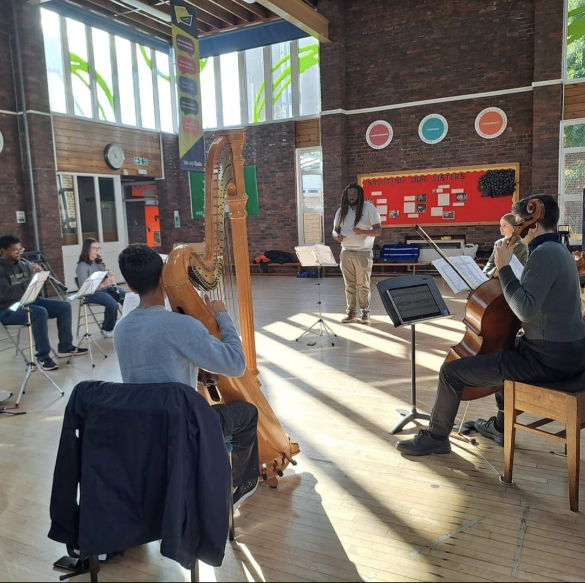
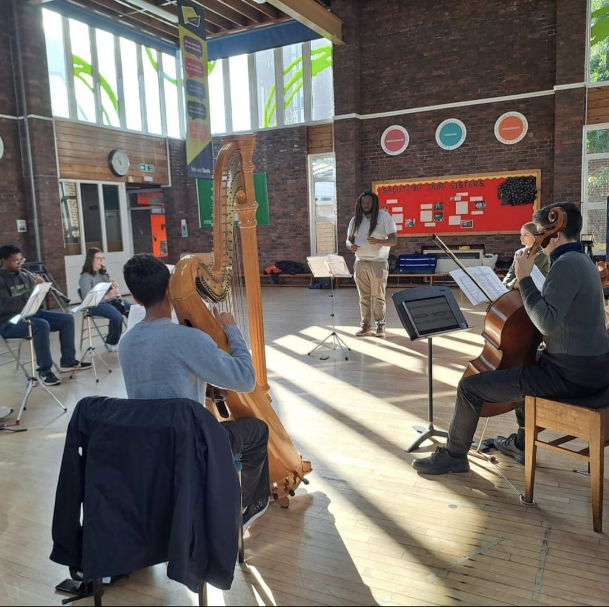

Anton Brown is a Caribbean-British oboist, who has played the oboe for 10 years, and is now studying at the Royal Academy of Music under Tom Blomfield and Patrick Flanaghan. He's interested in combining classical influences into genres associated with black identity such as R&B and jazz, but also is fascinated by emotionally dramatic works of the Romantic era. He is also deeply passionate about music education for all and works with younger musicians through the National Children's Orchestras for Great Britain and The Nucleo Project. In 2023, he became a London Philharmonic Orchestra Junior Artist (LPO JA) where he was mentored by Alice Munday and currently, he is the principal oboist of the Chineke! Junior Orchestra and has been coached by Banita Wheatley-Holmes, Lorraine Hart and Esther Williams. Since arriving at the Academy, he has been awarded as Highly Commended in the 2025 Oboe Prize and has played various symphonic works at the Royal Festival Hall, Fairfield Halls, The Clore Ballroom, St. John's Smith Square and Cadogan Hall.
Napoléon Coste's Cavatine op. 37 for oboe and guitar
Robert Schumann's Romance no. 2 for oboe and piano and Clara Schumann's Romance no. 1 for violin and piano (arr. for oboe)
 

Photo Credit 2025 Matthew Johnson
Image Copyright © London Transport Museum
Social Media